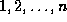
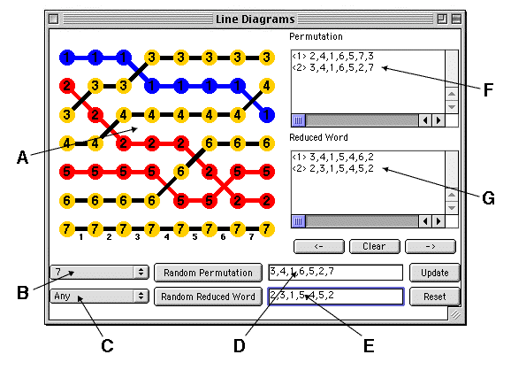
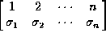
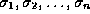
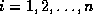
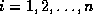
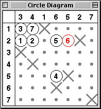

|
Combinatorial Aspects of the Lascoux-Schützenberger Tree
The Applet
Click on the buttons immediately below to launch the Line Diagram Applet and/or Circle Diagram. If the buttons
did not appear, then make sure your web browser is Java 1.1 compatible.
The below picture gives a view of what is displayed by the
Applet. We notice there the ``line diagram'' which corresponds to a reduced word. This
diagram gives the trajectories of the letters

as they are rearranged by the successive simple transpositions, starting from the identity and ending
with the target permutation.

Regional Descriptions
| A: |
This region displays the Line Diagram corresponding to the current reduced word
shown in E. Double click on a red cross to bump it up or back down. |
| B: |
Select a value of n. When value of n is changed, the Applet will
automatically select a new permutation and reduced word. |
| C: |
Select a particular type of permutation: Any (except identity), 321-avoiding,
Alternating, Dominant, Grassmanian, Reverse, or Vexillary. |
| D: |
This region displays the current permutation. You may type in your own
permutation of any size in this region. |
| E: |
This region displays the current reduced word. You may type in your own reduced
word in this region. |
| F: |
This region lists the permutations in the L-S Tree |
| G: |
This region lists the corresponding reduced words in the L-S Tree |
|
Button Descriptions
Random
Permutation: |
Click this button to select a random permutation of the given type and a word
corresponding to this permutation.
|
Random
Reduced Word: |
Click this button to select a random reduced word corresponding to the current
permutation.
|
| Update: |
This button updates the permutation and reduced word so that they agree with the
current line diagram. Also adds them to the appropriate lists in regions F and
G.
|
| Reset: |
This button resets the Line Diagram to correspond to the current reduced word and
ensures that the current permutation also corresponds to the current word.
|
| Clear: |
This button clears regions F and G and initializes them to be
the current permutation and reduced word, respectively.
|
->
(resp. <-): |
This button applies the bijection in the forward (resp. reverse) direction.
|
|
Below, we see there the corresponding ``circle diagram''. The
rows of this diagram are labelled
.
If the target permutation is

the columns are labelled
.
We place a ``
'' in column
 and row
for each
.
We place dots south and east of every ``
'', and circles in the remaining locations. If at time k the line diagram interchanges
r and s with r<s then k is placed in the circle at the intersection of the row labelled r with the column labelled s. The user will note that for any 321-avoiding permutation the labels of the circles constitute a standard tableau of french skew shape.
and row
for each
.
We place dots south and east of every ``
'', and circles in the remaining locations. If at time k the line diagram interchanges
r and s with r<s then k is placed in the circle at the intersection of the row labelled r with the column labelled s. The user will note that for any 321-avoiding permutation the labels of the circles constitute a standard tableau of french skew shape.

Double clicking on a "red" circle has the same effect as double clicking on the corresponding cross
in the line diagram.
For a demonstration of the bijection, click here.
|